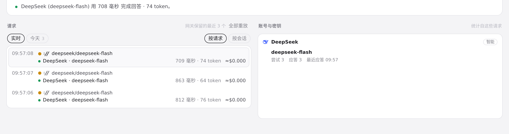
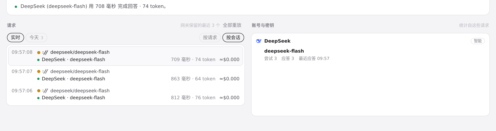
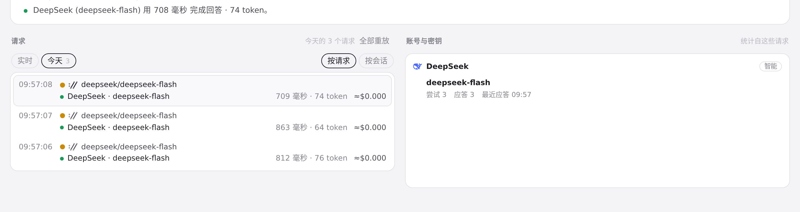

#396 界面预览
commit 222f77e · 回到 PR · 路由页的请求列表新增「按请求 / 按会话」分组切换（选择写入 localStorage，刷新后保留），每条请求的元信息末尾以及每个会话标题末尾显示按有效价格估算的费用（未知显示 —、部分合计带 +），会话标题可点击折叠；保留的历史日请求也会带同样的估算。
红线是鼠标走过的轨迹，红色圆环是一次点击；底部文字是这一步在做什么。空格暂停，← → 逐段查看。

路由请求列表的分组切换 · 路由页默认的「按请求」列表：分组切换按钮与每行末尾的费用估算

路由请求列表的分组切换 · 点击「按会话」后的请求列表

保留日里的费用估算 · 「今天」保留列表里的费用估算